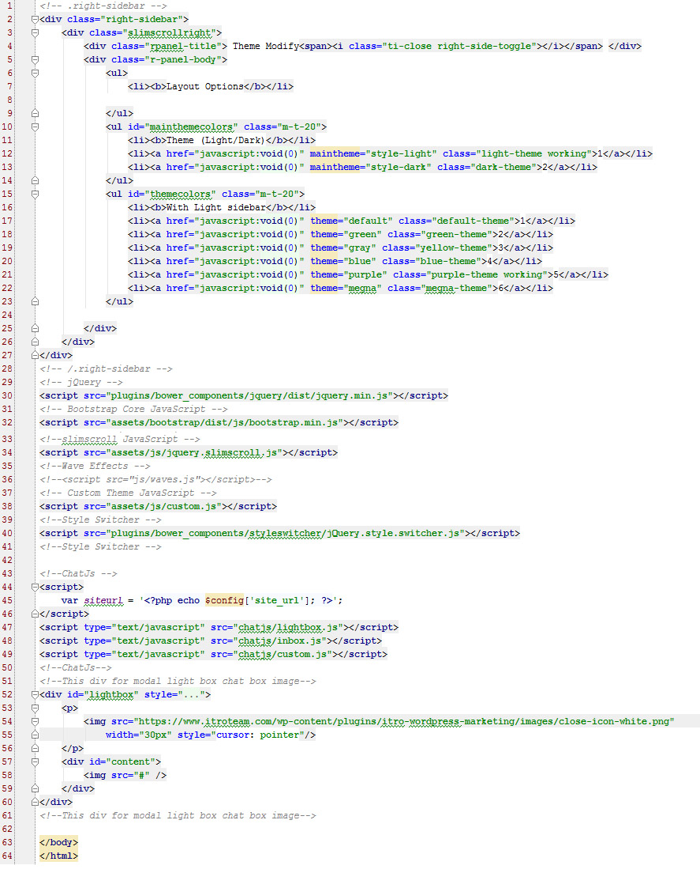

Wchat Documentation
Introduction
Wchat is a popular responsive php ajax inbox messaging (Chat) WebApp for websites, mobile apps and control panels. It is a responsive chating app that is Built with PHP/MySQLI-PDO and design with CSS framework Bootstrap 3.3.6 It utilizes all of the Bootstrap components in its design and re-styles many commonly used plugins to create a consistent design that can be used as a user interface for web and mobile applications. wchat is based on a modular design, which allows it to be easily customized and built upon. This documentation will guide you through installing the template and exploring the various components that are bundled with the template.
Note : Integrate With Existing User Table New
- Open Setting.php File in includes folder.
- You can change mysqli variable if you want to integrate wchat with your website user table.
- So easy you can see in this screen shot
- All is done setting completed. click on frontend and enjoy with wchat
Installation Guide
First of all, copy demo folder and paste to your server/localhost.- Run the wchat directory.
- It will redirect to /install directory.
- Step 1: Choose language. and click Next
- Step 2: Create a database with phpmyadmin.
- Step 3: Enter database dbhostname,dbusername,dbpassword,dbname. and click Next
- Step 4: Enter Admin login details. and click Next
- All is done Installation completed. click on frontend and enjoy with wchat
Template Structure
Theme based class of .chat-main-box, .left .right
Beginig of page
Below code is used at the beginning of all HTML pages
<!DOCTYPE html>
<html lang="en">
<head>
<meta charset="utf-8">
<meta http-equiv="X-UA-Compatible" content="IE=edge">
<meta name="viewport" content="width=device-width, initial-scale=1">
<meta name="description" content="">
<meta name="author" content="">
<link rel="icon" type="image/png" sizes="16x16" href="assets/images/favicon.png">
<title>Wchat - Responsive php ajax chat inbox messaging</title>
<!-- Bootstrap Core CSS -->
<link href="assets/bootstrap/dist/css/bootstrap.min.css" rel="stylesheet">
<!-- animation CSS -->
<link href="assets/css/animate.css" rel="stylesheet">
<!-- Custom CSS -->
<link href="assets/css/screen.css" rel="stylesheet">
<!-- Theme(light/dark) CSS -->
<link href="assets/css/style-light.css" id="maintheme" rel="stylesheet">
<!-- color CSS -->
<link href="assets/css/colors/default.css" id="theme" rel="stylesheet">
<!-- HTML5 Shim and Respond.js IE8 support of HTML5 elements and media queries -->
<!-- WARNING: Respond.js doesn't work if you view the page via file:// -->
<!--[if lt IE 9]>
<script src="https://oss.maxcdn.com/libs/html5shiv/3.7.0/html5shiv.js"></script>
<script src="https://oss.maxcdn.com/libs/respond.js/1.4.2/respond.min.js"></script>
<![endif]-->
</head>
Preloader (Spinner)
Below code is used for loading spinner for the template, you can change spinner from spinner.css file

<!-- Preloader --> <div class="preloader"> <div class="cssload-speeding-wheel"></div> </div>
Footer
Below code is used for Footer

Font family
Change the font family of whole template by simply change the google font link, just change in variable.less file
@import url(https://fonts.googleapis.com/css?family=Poppins:400,500,300,600,700); @basefont1:'Poppins', sans-serif;;
Theme light or dark Css
We made 2 different css files for dayand night mode.
style-light.light (this css is for light version) style-dark.light (this css is for dark version)
Structure
Wchat
├──
│ └── assets/
│ └── Bootstrap
│ └── Bootstrap 3.3.6 files
│ └── Css
│ └── All Css files
│ └── Js
│ └── All Theme Js files
│ └── Images
│ └── Images files
│
│ └── Audio/
│ └── Chat Notification Audio
│ └── Chatjs/
│ └── All Chat js files
│ └── emotions-fb/
│ └── All Smiley Images
│ └── Install/
│ └── Installtion Files
│ └── Plugins/
│ └── Plugin Files
│ └── Storage/
│ └── user_files
│ └── Sent images and files
│ └── user_images
│ └── User Profile images
│
│ └── All Php Files
└──
For Colors
Just replace the<!-- color CSS -->
<link href="assets/css/colors/default.css" id="theme" rel="stylesheet">
<link href="assets/css/colors/green.css" id="theme" rel="stylesheet">
<link href="assets/css/colors/gray.css" id="theme" rel="stylesheet">
<link href="assets/css/colors/blue.css" id="theme" rel="stylesheet">
<link href="assets/css/colors/purple.css" id="theme" rel="stylesheet">
<link href="assets/css/colors/megna.css" id="theme" rel="stylesheet">
For Light or Dark Version
just replace the<!-- Theme Version CSS -->
<link href="assets/css/style-light.css" id="maintheme" rel="stylesheet">
<link href="assets/css/style-dark.css" id="maintheme" rel="stylesheet">
Thats it!!!
Js Files
| File | Description |
|---|---|
jquery.js, bootstrap.js, jquery.slimscroll |
These files are used at main files of the theme. and nicescroll is for sidebarscroll |
assets/custom.js |
This is a main function js file. it contain sidebar and other basic js |
chatjs/inbox.js, chatjs/custom.js |
This is a main function js file. it contain chating process and other basic js |
chatjs/lightbox.js |
This is for sent images showing in popup. |
Support
If you need any help or feel any query don't hesitate just mail me (with licence key) on bylancertheme@gmail.com, i would love to help you, Once again thanks for the purchasing wchat script, i hope you enjoy it. Thanks